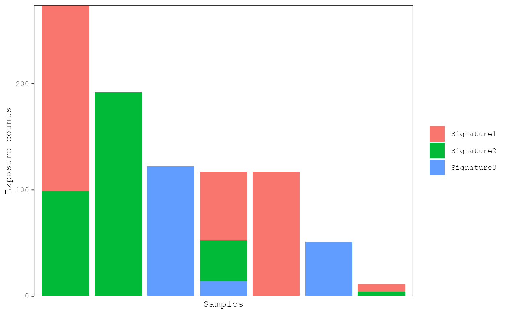

R/plot_exposures.R
plot_exposures.RdThe distributions of mutational signatures can be viewed
with barplots or box/violin plots. Barplots are most useful for viewing
the proportion of signatures within and across samples. The box/violin plots
are most useful for viewing the distributions of signatures with respect to
sample annotations. Samples can be grouped using the group_by
parameter. For barplots, various methods of sorting samples from left
to right can be chosen using the sort_samples parameter.
plot_exposures(
result,
plot_type = c("bar", "box", "violin"),
proportional = FALSE,
group_by = "none",
color_by = c("signature", "annotation"),
annotation = NULL,
num_samples = NULL,
sort_samples = "total",
threshold = NULL,
same_scale = FALSE,
add_points = FALSE,
point_size = 2,
label_x_axis = FALSE,
legend = TRUE,
plotly = FALSE
)A musica_result object generated by
a mutational discovery or prediction tool.
One of "bar", "box", or "violin".
Default "bar".
If TRUE, then the exposures will be normalized
to between 0 and 1 by dividing by the total number of counts for each sample.
Default FALSE.
Determines how to group samples into the subplots
(i.e. facets). One of "none", "signature" or
"annotation". If set to "annotation",
then a sample annotation must be supplied via the
annotation parameter. Default "none".
Determines how to color the bars or box/violins. One of
"signature" or "annotation". If set to "annotation",
then a sample annotation must be supplied via the
annotation parameter. Default "signature".
Sample annotation used to group the subplots and/or
color the bars, boxes, or violins. Default NULL.
The top number of sorted samples to display. If
NULL, then all samples will be displayed. If group_by is set,
then the top samples will be shown within each group. Default NULL.
This is used to change how samples are sorted in
the barplot from left to right. If set to "total", then samples
will be sorted from those with the highest number of mutation counts to the
lowest (regardless of how the parameter "proportional" is set).
If set to "name", then samples are sorted by their name with the
mixedsort function. If set to
one or more signature names (e.g. "Signature1"), then samples will
be sorted from those with the highest level of that signature to the lowest.
If multiple signatures are supplied then, samples will be sorted by each
signature sequentially. Default "total".
Exposures less than this threshold will be set to 0.
This is most useful when more than one signature is supplied to
sort_samples as samples that are set to zero for the first exposure
will then be sorted by the levels of the second exposure.
Default NULL.
If TRUE, then all subplots will have the
same scale. Only used when group_by is set. Default FALSE.
If TRUE, then points for individual sample
exposures will be plotted on top of the violin/box plots. Only used when
plot_type is set to "violin" or "box".
Default TRUE.
Size of the points to be plotted on top of the
violin/box plots. Only used when plot_type is set to "violin"
or "box" and add_points is set to TRUE.
Default 2.
If TRUE, x-axis labels will be displayed at
the bottom of the plot. Default FALSE.
If TRUE, the legend will be displayed.
Default TRUE.
If TRUE, the the plot will be made interactive
using plotly. Default FALSE.
Generates a ggplot or plotly object
data(res_annot)
plot_exposures(res_annot, plot_type = "bar", annotation = "Tumor_Subtypes")
